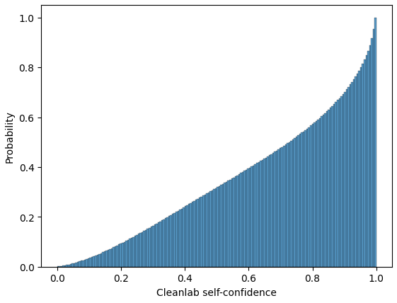

import datasets
mms_dataset = datasets.load_dataset("Brand24/mms")
mms_dataset_df = mms_dataset["train"].to_pandas()Easiness of using
One of the key ideas behind creating our library of datasets was to prioritize ease of use for researchers. Recognizing the importance of accessibility and convenience, we chose the HuggingFace platform as the storage and distribution platform for the datasets. HuggingFace provides a user-friendly interface and a wide range of tools and resources, making it easy for researchers to access and utilize the datasets.
To further enhance usability, we took the initiative to gather all the necessary citations for the datasets included in our library. By unifying the citations, we aimed to simplify and expedite the process of generating citations for researchers who utilize our datasets. This step reduces the time and effort required for researchers to acknowledge the datasets’ sources properly.
However, it is essential to note that while we have taken steps to streamline the citation process, researchers should still independently verify the licenses of the datasets, especially if they intend to use them for purposes beyond strict academic research. Ensuring compliance with licensing requirements is crucial to maintaining ethical and legal data use standards.
Overall, our overarching goal in creating this unified corpus of datasets is accelerating academic sentiment analysis research. By providing a comprehensive collection of high-quality datasets and facilitating their accessibility, we aim to support researchers in exploring and advancing sentiment analysis techniques and methodologies.
Data ready to slice and dice and train a model
Our dataset is designed to be versatile and allows researchers to slice and dice the data for training and modeling according to their specific needs. Drawing from the field of linguistic typology, which examines the characteristics of languages, we have incorporated various linguistic features into our dataset selection process. These features include the text itself, sentiment labels, the original dataset source, domain, language, language family, genus, the presence or absence of definite and indefinite articles, the number of cases, word order, negative morphemes, polar questions, the position of negative morphemes, prefixing vs. suffixing, coding of nominal plurals, and grammatical genders. Researchers can easily access datasets that match their desired linguistic typology criteria by offering these features as filtering options in our library.
For instance, researchers can download datasets specific to Slavic languages with interrogative word order for polar questions or datasets from the Afro-Asiatic language family without morphological case-making. This flexibility empowers researchers to tailor their analyses and models to their linguistic interests and research questions.
All features in dataset
mms_dataset_df.sample(5)| _id | text | label | original_dataset | domain | language | Family | Genus | Definite articles | Indefinite articles | Number of cases | Order of subject, object, verb | Negative morphemes | Polar questions | Position of negative word wrt SOV | Prefixing vs suffixing | Coding of nominal plurality | Grammatical genders | cleanlab_self_confidence | |
|---|---|---|---|---|---|---|---|---|---|---|---|---|---|---|---|---|---|---|---|
| 1117023 | 1117023 | hlucnost mi prijde uplne v pohode, pere dobre,... | 2 | cs_mall_product_reviews | reviews | cs | Indo-European | Slavic | no article | no article | 6-7 | SVO | negative affix | interrogative word order | MorphNeg | weakly suffixing | plural suffix | masculine, feminine, neuter | 0.679376 |
| 824580 | 824580 | “فندق جميل ولكن الخدمة جدا سيئه”. . الخدمة غير... | 0 | ar_hard | reviews | ar | Afro-Asiatic | Semitic | definite affix | no article | 3 | SVO | negative particle | interrogative intonation only | SNegVO | weakly suffixing | mixed morphological plural | masculine, feminine | 0.725264 |
| 6014593 | 6014593 | 刚开始不习惯…之后还挺好用的…很轻便 很细…调节长度也很方便 | 2 | zh_multilan_amazon | reviews | zh | Sino-Tibetan | Chinese | no article | indefinite word same as one | no morphological case-making | SVO | negative particle | question particle | SNegVO | little affixation | no plural | noun classifiers | 0.907645 |
| 5313872 | 5313872 | Чемпионы. И этим все сказано. | 2 | ru_sentiment | social_media | ru | Indo-European | Slavic | no article | no article | 6-7 | SVO | negative particle | question particle | SNegVO | strongly suffixing | plural suffix | masculine, feminine, neuter | 0.109386 |
| 4290632 | 4290632 | “@UnCharroDice: Y no ha de sobrar, quien con c... | 1 | es_twitter_sentiment | social_media | es | Indo-European | Romance | definite word distinct from demonstrative | indefinite word same as one | no morphological case-making | SVO | negative particle | interrogative word order | SNegVO | strongly suffixing | plural suffix | masculine, feminine | 0.164549 |
Linguistic Typology
The field of language typology focuses on studying the similarities and differences among languages. These differences can be categorized into phonological (sounds), syntactic (structures), lexical (vocabulary), and theoretical aspects. Linguistic typology analyzes the current state of languages, contrasting with genealogical linguistics, which examines historical relationships between languages.
Genealogical linguistics studies language families and genera. A language family consists of languages that share a common ancestral language, while genera are branches within a language family. The Indo-European family, for example, includes genera such as Slavic, Romance, Germanic, and Indic. Over 7000 languages are categorized into approximately 150 language families, with Indo-European, Sino-Tibetan, Turkic, Afro-Asiatic, Nilo-Saharan, Niger-Congo, and Eskimo-Aleut being some of the largest families.
Within linguistic typology, languages are described using various linguistic features. Our work focuses on sentiment classification and selects ten relevant features:
text: The feature text represents the actual text of the sentiment dataset. It is of type string and contains the text samples or sentences for sentiment analysis.label: The feature label corresponds to the sentiment labels of the text samples. It is of type ClassLabel and has three possible values: negative, neutral, and positive. These labels indicate the sentiment or emotional polarity associated with the text.original_dataset: The feature original_dataset refers to the name or identifier of the original dataset from which the text samples were extracted. It is of type string and provides information about the source dataset.domain: The feature domain represents the domain or topic of the sentiment dataset. It is of type string and provides context regarding the subject matter of the text samples.language: The feature language indicates the language of the text samples in the sentiment dataset. It is of type string and specifies the language in which the text is written.Family: The feature Family represents the language family to which a specific language belongs. It is of type string and provides information about the broader categorization of languages into language families.Genus: The feature Genus corresponds to the genus or branch within a language family. It is of type string and indicates the specific subgrouping of languages within a language family.Definite article: Half of the languages do not use the definite article, which signals uniqueness or definiteness of a concept.Indefinite article: Half of the languages do not use the indefinite article, with some languages using a separate article or the numeral “one.”Number of cases: Languages vary greatly in the number of morphological cases used.Order of subject, verb, and object: Different languages have different word orderings, with variations like SOV, SVO, VSO, VOS, OVS, and OSV.Negative morphemes: Negative morphemes indicate clausal negation in declarative sentences.Polar questions: Questions with yes/no answers, which can be formed using question particles, interrogative morphology, or intonation.Position of the negative morpheme: The position of the negative morpheme can vary in relation to subjects and objects.Prefixing vs. suffixing: Languages differ in their use of prefixes and suffixes in inflectional morphology.Coding of nominal plurals: Plurals can be expressed through morphological changes or the use of plurality indicator morphemes.Grammatical genders: Languages vary in the number of grammatical genders used, or may not use the concept at all.
These language features are available as filtering options in our library. Users can download specific facets of the collection, such as datasets in Slavic languages with interrogative word order for polar questions or datasets from the Afro-Asiatic language family without morphological case-making.
Datasheets for Datasets
The datasheets provide detailed information about the datasets, including data collection methods, annotation guidelines, and potential biases. They also specify the intended uses and potential limitations of the datasets.
The initial pool of sentiment datasets was gathered through an extensive search using sources such as Google Scholar, GitHub repositories, and the HuggingFace datasets library. This search yielded a total of 345 datasets.
To ensure the quality of the datasets, a set of quality assurance criteria was applied to manually filter the initial pool of datasets. The following criteria were used:
- Strong Annotations: Datasets containing weak annotations, such as labels based on emoji occurrence or automatically generated through classification by machine learning models, were rejected. This decision was made to minimize the presence of noise in the datasets, ensuring higher quality annotations.
- Well-Defined Annotation Protocol: Datasets without sufficient information about the annotation protocol, including whether the annotation was done manually or automatically and the number of annotators involved, were rejected. This step aimed to avoid merging datasets with contradicting annotation instructions, ensuring consistency across the selected datasets.
- Numerical Ratings: Datasets with numerical ratings were accepted. Specifically, Likert-type 5-point scales were mapped into three class sentiment labels. Ratings 1 and 2 were mapped to “negative,” rating 3 was mapped to “neutral,” and ratings 4 and 5 were mapped to “positive.” This mapping allowed for consistent sentiment labeling across the datasets.
- Three Classes Only: Datasets annotated with binary sentiment labels were rejected. The decision to focus on datasets with three sentiment classes (negative, neutral, and positive) was made based on the unsatisfactory performance of binary sentiment labeling in three-class settings.
- Monolingual Datasets: In cases where a dataset contained samples in multiple languages, it was divided into independent datasets for each constituent language. This approach ensured that the corpus includes separate datasets for different languages, allowing for targeted analysis and evaluation.
By applying these quality assurance criteria, we were able to filter the initial pool of sentiment datasets and select a final set of 79 datasets that met the specified standards for inclusion in the multilingual corpus.
f"We cover {mms_dataset_df.original_dataset.nunique()} datasets in {mms_dataset_df.language.nunique()} languages."'We cover 79 datasets in 27 languages.'f"The classes that we cover: {mms_dataset_df.label_name.unique()}""The classes that we cover: ['positive' 'neutral' 'negative']"Limitations
Despite the fact that our collection is the largest public collection of multilingual sentiment datasets, it still covers only 27 languages. The collection of datasets is highly biased towards the Indo-European family of languages, English in particular. We attribute this bias to the general culture of scientific publishing and its enforcement of English as the primary carrier of scientific discovery. Our work’s main potential negative social impact is that the models developed and trained using the provided datasets may still exhibit better performance for the major languages. This could further perpetuate the existing language disparities and inequality in sentiment analysis capabilities across different languages. Addressing this limitation and working towards more equitable representation and performance across languages is crucial to avoid reinforcing language biases and the potential marginalization of underrepresented languages. The ethical implications of such disparities should be thoroughly discussed and considered.

An important limitation of our dataset collection is a significant variance in sample quality across all datasets and all languages. Above figure presents the distribution of self-confidence label-quality score for each data point computed by the cleanlab (Northcutt, Jiang, and Chuang 2021). The distribution of quality is skewed in favor of popular languages, with low-resource languages suffering from data quality issues. A related limitation is caused by an unequal distribution of data modalities across languages. For instance, our benchmark clearly shows that all models universally underperform when tested on Portuguese datasets. This is the direct result of the fact that data points for Portuguese almost exclusively represent the domain of social media. As a consequence, some combinations of filtering facets in our dataset collection produce very little data (i.e., asking for social media data in the Germanic genus of Indo-European languages will produce a significantly larger dataset than asking for news data representing Afro-Asiatic languages).
Finally, we acknowledge the lack of internal coherence of annotation protocols between datasets and languages. We have enforced strict quality criteria and rejected all datasets published without the annotation protocol, but we were unable, for obvious reasons, to unify annotation guidelines. The annotation of sentiment expressions and the assignment of sentiment labels are heavily subjective and, at the same time, influenced by cultural and linguistic features. Unfortunately, it is possible that semantically similar utterances will be assigned conflicting labels if they come from different datasets or modalities.
Filter examples by annotation qualitym
We know how imporant data quality is for the model training processes. Hence, we added cleanlab scores to each of 6M+ examples in all datasets. Now, it is enalbe to filter examples based on how good quality of data do you need for traning.
We can sort examples by top data quality. Cleanlab’s self confidence is a function to compute label-quality scores for classification datasets, where lower scores indicate labels less likely to be correct. Hence, for the best quality we want to have the highest scores.
clean_labels_data = mms_dataset_df.sort_values(by="cleanlab_self_confidence", ascending=False).head(10_000)clean_labels_data.head()| _id | text | label | original_dataset | domain | language | Family | Genus | Definite articles | Indefinite articles | Number of cases | Order of subject, object, verb | Negative morphemes | Polar questions | Position of negative word wrt SOV | Prefixing vs suffixing | Coding of nominal plurality | Grammatical genders | cleanlab_self_confidence | label_name | |
|---|---|---|---|---|---|---|---|---|---|---|---|---|---|---|---|---|---|---|---|---|
| 3075302 | 3075302 | Great addition to any fan's yard! Show your te... | 2 | en_amazon | reviews | en | Indo-European | Germanic | definite word distinct from demonstrative | indefinite word distinct from one | 2 | SVO | negative particle | interrogative word order | SNegVO | strongly suffixing | plural suffix | no grammatical gender | 0.999981 | positive |
| 629922 | 629922 | مخيب للأمل. . ىحَ | 0 | ar_hard | reviews | ar | Afro-Asiatic | Semitic | definite affix | no article | 3 | SVO | negative particle | interrogative intonation only | SNegVO | weakly suffixing | mixed morphological plural | masculine, feminine | 0.999964 | negative |
| 2858237 | 2858237 | This is a great flag to display your love of A... | 2 | en_amazon | reviews | en | Indo-European | Germanic | definite word distinct from demonstrative | indefinite word distinct from one | 2 | SVO | negative particle | interrogative word order | SNegVO | strongly suffixing | plural suffix | no grammatical gender | 0.999950 | positive |
| 3110031 | 3110031 | One of the best knives I now proudly own! Am a... | 2 | en_amazon | reviews | en | Indo-European | Germanic | definite word distinct from demonstrative | indefinite word distinct from one | 2 | SVO | negative particle | interrogative word order | SNegVO | strongly suffixing | plural suffix | no grammatical gender | 0.999950 | positive |
| 2052971 | 2052971 | Amen! My Savior Loves! Wonderful testimony! | 2 | en_amazon | reviews | en | Indo-European | Germanic | definite word distinct from demonstrative | indefinite word distinct from one | 2 | SVO | negative particle | interrogative word order | SNegVO | strongly suffixing | plural suffix | no grammatical gender | 0.999948 | positive |
Datasets
We added all necessary citations to the HuggingFace datasets card. You can find them inside citation key. We added a helper fuinctions to parse them.
We can load citations as strings - easy adding to bibtex.
from mms_benchmark.citations import get_citationsprint(get_citations(mms_dataset["train"], citation_as_dict=False)["pl_polemo"])@inproceedings{dataset_pl_polemo,
title = "Multi-Level Sentiment Analysis of {P}ol{E}mo 2.0: Extended Corpus of Multi-Domain Consumer Reviews",
author = "Koco{\'n}, Jan and
Mi{\l}kowski, Piotr and
Za{\'s}ko-Zieli{\'n}ska, Monika",
booktitle = "Proceedings of the 23rd Conference on Computational Natural Language Learning (CoNLL)",
month = nov,
year = "2019",
address = "Hong Kong, China",
publisher = "Association for Computational Linguistics",
url = "https://aclanthology.org/K19-1092",
doi = "10.18653/v1/K19-1092",
pages = "980--991"
}
% ------------------------------------------------------------------------------------------
Or as dictionary for working with them.
citations = get_citations(mms_dataset["train"], citation_as_dict=True)citations["pl_polemo"]{'pages': '980--991',
'doi': '10.18653/v1/K19-1092',
'url': 'https://aclanthology.org/K19-1092',
'publisher': 'Association for Computational Linguistics',
'address': 'Hong Kong, China',
'year': '2019',
'month': 'November',
'booktitle': 'Proceedings of the 23rd Conference on Computational Natural Language Learning (CoNLL)',
'author': "Koco{\\'n}, Jan and\nMi{\\l}kowski, Piotr and\nZa{\\'s}ko-Zieli{\\'n}ska, Monika",
'title': 'Multi-Level Sentiment Analysis of {P}ol{E}mo 2.0: Extended Corpus of Multi-Domain Consumer Reviews',
'ENTRYTYPE': 'inproceedings',
'ID': 'dataset_pl_polemo'}Show all datasets with citations in a table
mms_dataset_df["citation"] = mms_dataset_df["original_dataset"].apply(lambda x: f'[@{citations[x]["ID"]}]')mms_dataset_df[DATASET_COLS].drop_duplicates().sort_values("language").reset_index(drop=True)| language | original_dataset | domain | Family | Genus | Definite articles | Indefinite articles | Number of cases | Order of subject, object, verb | Negative morphemes | Polar questions | Position of negative word wrt SOV | Prefixing vs suffixing | Coding of nominal plurality | Grammatical genders | citation | |
|---|---|---|---|---|---|---|---|---|---|---|---|---|---|---|---|---|
| 0 | ar | ar_arsentdl | social_media | Afro-Asiatic | Semitic | definite affix | no article | 3 | SVO | negative particle | interrogative intonation only | SNegVO | weakly suffixing | mixed morphological plural | masculine, feminine | [@dataset_ar_arsentdl] |
| 1 | ar | ar_semeval_2017 | mixed | Afro-Asiatic | Semitic | definite affix | no article | 3 | SVO | negative particle | interrogative intonation only | SNegVO | weakly suffixing | mixed morphological plural | masculine, feminine | [@dataset_semeval_2017] |
| 2 | ar | ar_oclar | reviews | Afro-Asiatic | Semitic | definite affix | no article | 3 | SVO | negative particle | interrogative intonation only | SNegVO | weakly suffixing | mixed morphological plural | masculine, feminine | [@dataset_ar_oclar] |
| 3 | ar | ar_labr | reviews | Afro-Asiatic | Semitic | definite affix | no article | 3 | SVO | negative particle | interrogative intonation only | SNegVO | weakly suffixing | mixed morphological plural | masculine, feminine | [@dataset_ar_labr] |
| 4 | ar | ar_syria_corpus | social_media | Afro-Asiatic | Semitic | definite affix | no article | 3 | SVO | negative particle | interrogative intonation only | SNegVO | weakly suffixing | mixed morphological plural | masculine, feminine | [@dataset_ar_bbn] |
| 5 | ar | ar_brad | reviews | Afro-Asiatic | Semitic | definite affix | no article | 3 | SVO | negative particle | interrogative intonation only | SNegVO | weakly suffixing | mixed morphological plural | masculine, feminine | [@dataset_ar_brad] |
| 6 | ar | ar_bbn | social_media | Afro-Asiatic | Semitic | definite affix | no article | 3 | SVO | negative particle | interrogative intonation only | SNegVO | weakly suffixing | mixed morphological plural | masculine, feminine | [@dataset_ar_bbn] |
| 7 | ar | ar_astd | social_media | Afro-Asiatic | Semitic | definite affix | no article | 3 | SVO | negative particle | interrogative intonation only | SNegVO | weakly suffixing | mixed morphological plural | masculine, feminine | [@dataset_ar_astd] |
| 8 | ar | ar_hard | reviews | Afro-Asiatic | Semitic | definite affix | no article | 3 | SVO | negative particle | interrogative intonation only | SNegVO | weakly suffixing | mixed morphological plural | masculine, feminine | [@dataset_ar_hard] |
| 9 | bg | bg_twitter_sentiment | social_media | Indo-European | Slavic | definite word distinct from demonstrative | no article | no morphological case-making | SVO | negative particle | question particle | SNegVO | strongly suffixing | plural suffix | masculine, feminine, neuter | [@dataset_twitter_sentiment] |
| 10 | bs | bs_twitter_sentiment | social_media | Indo-European | Slavic | no article | no article | 5 | SVO | negative particle | question particle | other | strongly suffixing | plural suffix | masculine, feminine, neuter | [@dataset_twitter_sentiment] |
| 11 | cs | cs_facebook | social_media | Indo-European | Slavic | no article | no article | 6-7 | SVO | negative affix | interrogative word order | MorphNeg | weakly suffixing | plural suffix | masculine, feminine, neuter | [@dataset_cs_social_media] |
| 12 | cs | cs_mall_product_reviews | reviews | Indo-European | Slavic | no article | no article | 6-7 | SVO | negative affix | interrogative word order | MorphNeg | weakly suffixing | plural suffix | masculine, feminine, neuter | [@dataset_cs_social_media] |
| 13 | cs | cs_movie_reviews | reviews | Indo-European | Slavic | no article | no article | 6-7 | SVO | negative affix | interrogative word order | MorphNeg | weakly suffixing | plural suffix | masculine, feminine, neuter | [@dataset_cs_social_media] |
| 14 | cs | cs_news_stance | social_media | Indo-European | Slavic | no article | no article | 6-7 | SVO | negative affix | interrogative word order | MorphNeg | weakly suffixing | plural suffix | masculine, feminine, neuter | [@dataset_cs_social_media] |
| 15 | de | de_twitter_sentiment | social_media | Indo-European | Germanic | definite word distinct from demonstrative | indefinite word same as one | 4 | no dominant order | negative particle | interrogative word order | more than one position | strongly suffixing | plural suffix | masculine, feminine, neuter | [@dataset_twitter_sentiment] |
| 16 | de | de_omp | social_media | Indo-European | Germanic | definite word distinct from demonstrative | indefinite word same as one | 4 | no dominant order | negative particle | interrogative word order | more than one position | strongly suffixing | plural suffix | masculine, feminine, neuter | [@dataset_de_omp] |
| 17 | de | de_sb10k | social_media | Indo-European | Germanic | definite word distinct from demonstrative | indefinite word same as one | 4 | no dominant order | negative particle | interrogative word order | more than one position | strongly suffixing | plural suffix | masculine, feminine, neuter | [@dataset_de_sb10k] |
| 18 | de | de_ifeel | social_media | Indo-European | Germanic | definite word distinct from demonstrative | indefinite word same as one | 4 | no dominant order | negative particle | interrogative word order | more than one position | strongly suffixing | plural suffix | masculine, feminine, neuter | [@dataset_dai_labor] |
| 19 | de | de_dai_labor | social_media | Indo-European | Germanic | definite word distinct from demonstrative | indefinite word same as one | 4 | no dominant order | negative particle | interrogative word order | more than one position | strongly suffixing | plural suffix | masculine, feminine, neuter | [@dataset_dai_labor] |
| 20 | de | de_multilan_amazon | reviews | Indo-European | Germanic | definite word distinct from demonstrative | indefinite word same as one | 4 | no dominant order | negative particle | interrogative word order | more than one position | strongly suffixing | plural suffix | masculine, feminine, neuter | [@dataset_multilan_amazon] |
| 21 | en | en_vader_twitter | social_media | Indo-European | Germanic | definite word distinct from demonstrative | indefinite word distinct from one | 2 | SVO | negative particle | interrogative word order | SNegVO | strongly suffixing | plural suffix | no grammatical gender | [@dataset_en_vader] |
| 22 | en | en_vader_nyt | news | Indo-European | Germanic | definite word distinct from demonstrative | indefinite word distinct from one | 2 | SVO | negative particle | interrogative word order | SNegVO | strongly suffixing | plural suffix | no grammatical gender | [@dataset_en_vader] |
| 23 | en | en_vader_movie_reviews | reviews | Indo-European | Germanic | definite word distinct from demonstrative | indefinite word distinct from one | 2 | SVO | negative particle | interrogative word order | SNegVO | strongly suffixing | plural suffix | no grammatical gender | [@dataset_en_vader] |
| 24 | en | en_vader_amazon | reviews | Indo-European | Germanic | definite word distinct from demonstrative | indefinite word distinct from one | 2 | SVO | negative particle | interrogative word order | SNegVO | strongly suffixing | plural suffix | no grammatical gender | [@dataset_en_vader] |
| 25 | en | en_twitter_sentiment | social_media | Indo-European | Germanic | definite word distinct from demonstrative | indefinite word distinct from one | 2 | SVO | negative particle | interrogative word order | SNegVO | strongly suffixing | plural suffix | no grammatical gender | [@dataset_twitter_sentiment] |
| 26 | en | en_tweets_sanders | social_media | Indo-European | Germanic | definite word distinct from demonstrative | indefinite word distinct from one | 2 | SVO | negative particle | interrogative word order | SNegVO | strongly suffixing | plural suffix | no grammatical gender | [@dataset_en_tweets_sanders] |
| 27 | en | en_tweet_airlines | social_media | Indo-European | Germanic | definite word distinct from demonstrative | indefinite word distinct from one | 2 | SVO | negative particle | interrogative word order | SNegVO | strongly suffixing | plural suffix | no grammatical gender | [@dataset_en_tweet_airlines] |
| 28 | en | en_silicone_sem | chats | Indo-European | Germanic | definite word distinct from demonstrative | indefinite word distinct from one | 2 | SVO | negative particle | interrogative word order | SNegVO | strongly suffixing | plural suffix | no grammatical gender | [@dataset_en_silicone] |
| 29 | en | en_sentistrength | social_media | Indo-European | Germanic | definite word distinct from demonstrative | indefinite word distinct from one | 2 | SVO | negative particle | interrogative word order | SNegVO | strongly suffixing | plural suffix | no grammatical gender | [@dataset_en_sentistrength] |
| 30 | en | en_semeval_2017 | mixed | Indo-European | Germanic | definite word distinct from demonstrative | indefinite word distinct from one | 2 | SVO | negative particle | interrogative word order | SNegVO | strongly suffixing | plural suffix | no grammatical gender | [@dataset_semeval_2017] |
| 31 | en | en_poem_sentiment | poems | Indo-European | Germanic | definite word distinct from demonstrative | indefinite word distinct from one | 2 | SVO | negative particle | interrogative word order | SNegVO | strongly suffixing | plural suffix | no grammatical gender | [@dataset_en_poem_sentiment] |
| 32 | en | en_per_sent | news | Indo-European | Germanic | definite word distinct from demonstrative | indefinite word distinct from one | 2 | SVO | negative particle | interrogative word order | SNegVO | strongly suffixing | plural suffix | no grammatical gender | [@dataset_en_per_sent] |
| 33 | en | en_multilan_amazon | reviews | Indo-European | Germanic | definite word distinct from demonstrative | indefinite word distinct from one | 2 | SVO | negative particle | interrogative word order | SNegVO | strongly suffixing | plural suffix | no grammatical gender | [@dataset_multilan_amazon] |
| 34 | en | en_financial_phrasebank_sentences_75agree | news | Indo-European | Germanic | definite word distinct from demonstrative | indefinite word distinct from one | 2 | SVO | negative particle | interrogative word order | SNegVO | strongly suffixing | plural suffix | no grammatical gender | [@dataset_en_financial_phrasebank_sentences_75agree] |
| 35 | en | en_dai_labor | social_media | Indo-European | Germanic | definite word distinct from demonstrative | indefinite word distinct from one | 2 | SVO | negative particle | interrogative word order | SNegVO | strongly suffixing | plural suffix | no grammatical gender | [@dataset_dai_labor] |
| 36 | en | en_amazon | reviews | Indo-European | Germanic | definite word distinct from demonstrative | indefinite word distinct from one | 2 | SVO | negative particle | interrogative word order | SNegVO | strongly suffixing | plural suffix | no grammatical gender | [@dataset_en_amazon] |
| 37 | en | en_silicone_meld_s | chats | Indo-European | Germanic | definite word distinct from demonstrative | indefinite word distinct from one | 2 | SVO | negative particle | interrogative word order | SNegVO | strongly suffixing | plural suffix | no grammatical gender | [@dataset_en_silicone] |
| 38 | es | es_twitter_sentiment | social_media | Indo-European | Romance | definite word distinct from demonstrative | indefinite word same as one | no morphological case-making | SVO | negative particle | interrogative word order | SNegVO | strongly suffixing | plural suffix | masculine, feminine | [@dataset_twitter_sentiment] |
| 39 | es | es_semeval2020 | social_media | Indo-European | Romance | definite word distinct from demonstrative | indefinite word same as one | no morphological case-making | SVO | negative particle | interrogative word order | SNegVO | strongly suffixing | plural suffix | masculine, feminine | [@dataset_semeval_2020] |
| 40 | es | es_multilan_amazon | reviews | Indo-European | Romance | definite word distinct from demonstrative | indefinite word same as one | no morphological case-making | SVO | negative particle | interrogative word order | SNegVO | strongly suffixing | plural suffix | masculine, feminine | [@dataset_multilan_amazon] |
| 41 | es | es_muchocine | reviews | Indo-European | Romance | definite word distinct from demonstrative | indefinite word same as one | no morphological case-making | SVO | negative particle | interrogative word order | SNegVO | strongly suffixing | plural suffix | masculine, feminine | [@dataset_es_muchocine] |
| 42 | es | es_paper_reviews | reviews | Indo-European | Romance | definite word distinct from demonstrative | indefinite word same as one | no morphological case-making | SVO | negative particle | interrogative word order | SNegVO | strongly suffixing | plural suffix | masculine, feminine | [@dataset_es_paper_reviews] |
| 43 | fa | fa_sentipers | reviews | Indo-European | Iranian | no article | indefinite word same as one | 2 | SOV | negative affix | question particle | MorphNeg | weakly suffixing | plural suffix | no grammatical gender | [@dataset_fa_sentipers] |
| 44 | fr | fr_dai_labor | social_media | Indo-European | Romance | definite word distinct from demonstrative | indefinite word same as one | no morphological case-making | SVO | negative particle | question particle | OptDoubleNeg | strongly suffixing | plural suffix | masculine, feminine | [@dataset_dai_labor] |
| 45 | fr | fr_ifeel | social_media | Indo-European | Romance | definite word distinct from demonstrative | indefinite word same as one | no morphological case-making | SVO | negative particle | question particle | OptDoubleNeg | strongly suffixing | plural suffix | masculine, feminine | [@dataset_dai_labor] |
| 46 | fr | fr_multilan_amazon | reviews | Indo-European | Romance | definite word distinct from demonstrative | indefinite word same as one | no morphological case-making | SVO | negative particle | question particle | OptDoubleNeg | strongly suffixing | plural suffix | masculine, feminine | [@dataset_multilan_amazon] |
| 47 | he | he_hebrew_sentiment | social_media | Afro-Asiatic | Semitic | definite affix | indefinite word same as one | no morphological case-making | SVO | negative particle | question particle | SNegVO | weakly suffixing | plural suffix | masculine, feminine | [@dataset_he_hebrew_sentiment] |
| 48 | hi | hi_semeval2020 | social_media | Indo-European | Indic | no article | no article | 3 | SOV | negative particle | question particle | SONegV | strongly suffixing | plural suffix | masculine, feminine | [@dataset_semeval_2020] |
| 49 | hr | hr_sentiment_news_document | news | Indo-European | Slavic | no article | no article | 5 | SVO | negative particle | question particle | other | strongly suffixing | plural suffix | masculine, feminine, neuter | [@dataset_hr_sentiment_news_document] |
| 50 | hr | hr_twitter_sentiment | social_media | Indo-European | Slavic | no article | no article | 5 | SVO | negative particle | question particle | other | strongly suffixing | plural suffix | masculine, feminine, neuter | [@dataset_twitter_sentiment] |
| 51 | hu | hu_twitter_sentiment | social_media | Uralic | Ugric | definite word distinct from demonstrative | indefinite word distinct from one | 10 or more | no dominant order | negative particle | question particle | SNegVO | strongly suffixing | plural suffix | no grammatical gender | [@dataset_twitter_sentiment] |
| 52 | it | it_evalita2016 | social_media | Indo-European | Romance | definite word distinct from demonstrative | indefinite word same as one | no morphological case-making | SVO | negative particle | interrogative intonation only | SNegVO | strongly suffixing | plural suffix | masculine, feminine | [@dataset_it_evalita2016] |
| 53 | it | it_multiemotions | social_media | Indo-European | Romance | definite word distinct from demonstrative | indefinite word same as one | no morphological case-making | SVO | negative particle | interrogative intonation only | SNegVO | strongly suffixing | plural suffix | masculine, feminine | [@dataset_it_multiemotions] |
| 54 | ja | ja_multilan_amazon | reviews | Japanese | Japanese | no article | indefinite word distinct from one | 8-9 | SOV | negative affix | question particle | MorphNeg | strongly suffixing | plural suffix | no grammatical gender | [@dataset_multilan_amazon] |
| 55 | lv | lv_ltec_sentiment | social_media | Indo-European | Baltic | demonstrative word used as definite article | indefinite word same as one | 5 | SVO | negative affix | question particle | MorphNeg | weakly suffixing | plural suffix | masculine, feminine | [@dataset_lv_ltec_sentiment] |
| 56 | pl | pl_twitter_sentiment | social_media | Indo-European | Slavic | no article | no article | 6-7 | SVO | negative particle | question particle | SNegVO | strongly suffixing | plural suffix | masculine, feminine, neuter | [@dataset_twitter_sentiment] |
| 57 | pl | pl_polemo | reviews | Indo-European | Slavic | no article | no article | 6-7 | SVO | negative particle | question particle | SNegVO | strongly suffixing | plural suffix | masculine, feminine, neuter | [@dataset_pl_polemo] |
| 58 | pl | pl_klej_allegro_reviews | reviews | Indo-European | Slavic | no article | no article | 6-7 | SVO | negative particle | question particle | SNegVO | strongly suffixing | plural suffix | masculine, feminine, neuter | [@dataset_pl_klej_allegro_reviews] |
| 59 | pl | pl_opi_lil_2012 | social_media | Indo-European | Slavic | no article | no article | 6-7 | SVO | negative particle | question particle | SNegVO | strongly suffixing | plural suffix | masculine, feminine, neuter | [@dataset_pl_opi_lil_2012] |
| 60 | pt | pt_dai_labor | social_media | Indo-European | Romance | definite word distinct from demonstrative | indefinite word same as one | no morphological case-making | SVO | negative particle | question particle | SNegVO | strongly suffixing | plural suffix | masculine, feminine | [@dataset_dai_labor] |
| 61 | pt | pt_ifeel | social_media | Indo-European | Romance | definite word distinct from demonstrative | indefinite word same as one | no morphological case-making | SVO | negative particle | question particle | SNegVO | strongly suffixing | plural suffix | masculine, feminine | [@dataset_dai_labor] |
| 62 | pt | pt_tweet_sent_br | social_media | Indo-European | Romance | definite word distinct from demonstrative | indefinite word same as one | no morphological case-making | SVO | negative particle | question particle | SNegVO | strongly suffixing | plural suffix | masculine, feminine | [@dataset_pt_tweet_sent_br] |
| 63 | pt | pt_twitter_sentiment | social_media | Indo-European | Romance | definite word distinct from demonstrative | indefinite word same as one | no morphological case-making | SVO | negative particle | question particle | SNegVO | strongly suffixing | plural suffix | masculine, feminine | [@dataset_twitter_sentiment] |
| 64 | ru | ru_sentiment | social_media | Indo-European | Slavic | no article | no article | 6-7 | SVO | negative particle | question particle | SNegVO | strongly suffixing | plural suffix | masculine, feminine, neuter | [@dataset_ru_sentiment] |
| 65 | ru | ru_twitter_sentiment | social_media | Indo-European | Slavic | no article | no article | 6-7 | SVO | negative particle | question particle | SNegVO | strongly suffixing | plural suffix | masculine, feminine, neuter | [@dataset_twitter_sentiment] |
| 66 | sk | sk_twitter_sentiment | social_media | Indo-European | Slavic | no article | no article | 6-7 | SVO | negative affix | interrogative word order | MorphNeg | weakly suffixing | plural suffix | masculine, feminine, neuter | [@dataset_twitter_sentiment] |
| 67 | sl | sl_sentinews | news | Indo-European | Slavic | no article | no article | 6-7 | SVO | negative particle | question particle | SNegVO | strongly suffixing | plural suffix | masculine, feminine, neuter | [@Bučar2018] |
| 68 | sl | sl_twitter_sentiment | social_media | Indo-European | Slavic | no article | no article | 6-7 | SVO | negative particle | question particle | SNegVO | strongly suffixing | plural suffix | masculine, feminine, neuter | [@dataset_twitter_sentiment] |
| 69 | sq | sq_twitter_sentiment | social_media | Indo-European | Albanian | definite affix | indefinite word distinct from one | 4 | SVO | negative particle | question particle | SNegVO | strongly suffixing | plural suffix | masculine, feminine | [@dataset_twitter_sentiment] |
| 70 | sr | sr_movie_reviews | reviews | Indo-European | Slavic | no article | no article | 5 | SVO | negative particle | question particle | other | strongly suffixing | plural suffix | masculine, feminine, neuter | [@dataset_sr_serb_movie_reviews] |
| 71 | sr | sr_senticomments | reviews | Indo-European | Slavic | no article | no article | 5 | SVO | negative particle | question particle | other | strongly suffixing | plural suffix | masculine, feminine, neuter | [@dataset_sr_senticomments] |
| 72 | sr | sr_twitter_sentiment | social_media | Indo-European | Slavic | no article | no article | 5 | SVO | negative particle | question particle | other | strongly suffixing | plural suffix | masculine, feminine, neuter | [@dataset_twitter_sentiment] |
| 73 | sv | sv_twitter_sentiment | social_media | Indo-European | Germanic | definite affix | indefinite word same as one | 2 | SVO | negative particle | interrogative word order | more than one position | strongly suffixing | plural suffix | common, neuter | [@dataset_twitter_sentiment] |
| 74 | th | th_wongnai_reviews | reviews | Tai-Kadai | Kam-Tai | no article | indefinite word distinct from one | no morphological case-making | SVO | negative auxiliary verb | question particle | SNegVO | little affixation | mixed morphological plural | noun classifiers | [@dataset_th_wongnai_reviews] |
| 75 | th | th_wisesight_sentiment | social_media | Tai-Kadai | Kam-Tai | no article | indefinite word distinct from one | no morphological case-making | SVO | negative auxiliary verb | question particle | SNegVO | little affixation | mixed morphological plural | noun classifiers | [@dataset_th_wisesight_sentiment] |
| 76 | ur | ur_roman_urdu | mixed | Indo-European | Indic | no article | no article | 2 | SOV | negative affix | question particle | SONegV | strongly suffixing | plural suffix | masculine, feminine | [@dataset_ur_roman_urdu] |
| 77 | zh | zh_hotel_reviews | reviews | Sino-Tibetan | Chinese | no article | indefinite word same as one | no morphological case-making | SVO | negative particle | question particle | SNegVO | little affixation | no plural | noun classifiers | [@dataset_zh_hotel_reviews] |
| 78 | zh | zh_multilan_amazon | reviews | Sino-Tibetan | Chinese | no article | indefinite word same as one | no morphological case-making | SVO | negative particle | question particle | SNegVO | little affixation | no plural | noun classifiers | [@dataset_multilan_amazon] |
Dataset Stats
Datasets per language
pd.DataFrame(mms_dataset_df.groupby("language").original_dataset.nunique().sort_values(ascending=False))| original_dataset | |
|---|---|
| language | |
| en | 17 |
| ar | 9 |
| de | 6 |
| es | 5 |
| pl | 4 |
| cs | 4 |
| pt | 4 |
| sr | 3 |
| fr | 3 |
| th | 2 |
| sl | 2 |
| ru | 2 |
| it | 2 |
| hr | 2 |
| zh | 2 |
| bg | 1 |
| ja | 1 |
| lv | 1 |
| hu | 1 |
| hi | 1 |
| sk | 1 |
| he | 1 |
| sq | 1 |
| fa | 1 |
| sv | 1 |
| bs | 1 |
| ur | 1 |
Labels per language
pd.DataFrame(mms_dataset_df.groupby(by=["language", "label_name"]).count()["text"])| text | ||
|---|---|---|
| language | label_name | |
| ar | negative | 138899 |
| neutral | 192774 | |
| positive | 600402 | |
| bg | negative | 13930 |
| neutral | 28657 | |
| positive | 19563 | |
| bs | negative | 11974 |
| neutral | 11145 | |
| positive | 13064 | |
| cs | negative | 39674 |
| neutral | 59200 | |
| positive | 97413 | |
| de | negative | 104667 |
| neutral | 100071 | |
| positive | 111149 | |
| en | negative | 304939 |
| neutral | 290823 | |
| positive | 1734724 | |
| es | negative | 108733 |
| neutral | 122493 | |
| positive | 187486 | |
| fa | negative | 1602 |
| neutral | 5091 | |
| positive | 6832 | |
| fr | negative | 84187 |
| neutral | 43245 | |
| positive | 83199 | |
| he | negative | 2279 |
| neutral | 243 | |
| positive | 6097 | |
| hi | negative | 4992 |
| neutral | 6392 | |
| positive | 5615 | |
| hr | negative | 19757 |
| neutral | 19470 | |
| positive | 38367 | |
| hu | negative | 8974 |
| neutral | 17621 | |
| positive | 30087 | |
| it | negative | 4043 |
| neutral | 4193 | |
| positive | 3829 | |
| ja | negative | 83982 |
| neutral | 41979 | |
| positive | 83819 | |
| lv | negative | 1378 |
| neutral | 2618 | |
| positive | 1794 | |
| pl | negative | 77422 |
| neutral | 62074 | |
| positive | 97192 | |
| pt | negative | 56827 |
| neutral | 55165 | |
| positive | 45842 | |
| ru | negative | 31770 |
| neutral | 48106 | |
| positive | 31054 | |
| sk | negative | 14431 |
| neutral | 12842 | |
| positive | 29350 | |
| sl | negative | 33694 |
| neutral | 50553 | |
| positive | 29296 | |
| sq | negative | 6889 |
| neutral | 14757 | |
| positive | 22638 | |
| sr | negative | 25089 |
| neutral | 32283 | |
| positive | 18996 | |
| sv | negative | 16266 |
| neutral | 13342 | |
| positive | 11738 | |
| th | negative | 9326 |
| neutral | 28616 | |
| positive | 34377 | |
| ur | negative | 5239 |
| neutral | 8585 | |
| positive | 5836 | |
| zh | negative | 117967 |
| neutral | 69016 | |
| positive | 144719 |
Texts in Language Family and Genus
pd.DataFrame(mms_dataset_df.groupby(by=['Family', 'Genus',]).count()["text"])| text | ||
|---|---|---|
| Family | Genus | |
| Afro-Asiatic | Semitic | 940694 |
| Indo-European | Albanian | 44284 |
| Baltic | 5790 | |
| Germanic | 2687719 | |
| Indic | 36659 | |
| Iranian | 13525 | |
| Romance | 799242 | |
| Slavic | 966366 | |
| Japanese | Japanese | 209780 |
| Sino-Tibetan | Chinese | 331702 |
| Tai-Kadai | Kam-Tai | 72319 |
| Uralic | Ugric | 56682 |
Examples per domain
pd.DataFrame(mms_dataset_df.groupby(by=["domain"]).count()["text"])| text | |
|---|---|
| domain | |
| chats | 16781 |
| mixed | 94122 |
| news | 26413 |
| poems | 1052 |
| reviews | 4510893 |
| social_media | 1515501 |
Hosting, Licensing, and Maintenance Plan
- Hosting: The datasets and benchmark will be hosted on a reliable and scalable cloud infrastructure to ensure accessibility and availability (HuggingFace Hub). The choice of hosting platform will be based on factors such as reliability, performance, and cost-effectiveness.
- Licensing: We will clearly state the data license under which the datasets are released, ensuring that the terms of use are explicitly defined. We will consider licenses that facilitate research and allow for derivative works, while also addressing potential ethical considerations. See the license in repository.
- Maintenance: We (see Dataset Curators section) are committed to providing ongoing maintenance and support for the datasets and benchmark. This includes regular updates, bug fixes, and addressing any user feedback or inquiries. We will also establish a communication channel for users to report issues or request assistance.
References
Northcutt, Curtis, Lu Jiang, and Isaac Chuang. 2021. “Confident Learning: Estimating Uncertainty in Dataset Labels.” Journal of Artificial Intelligence Research 70: 1373–1411.